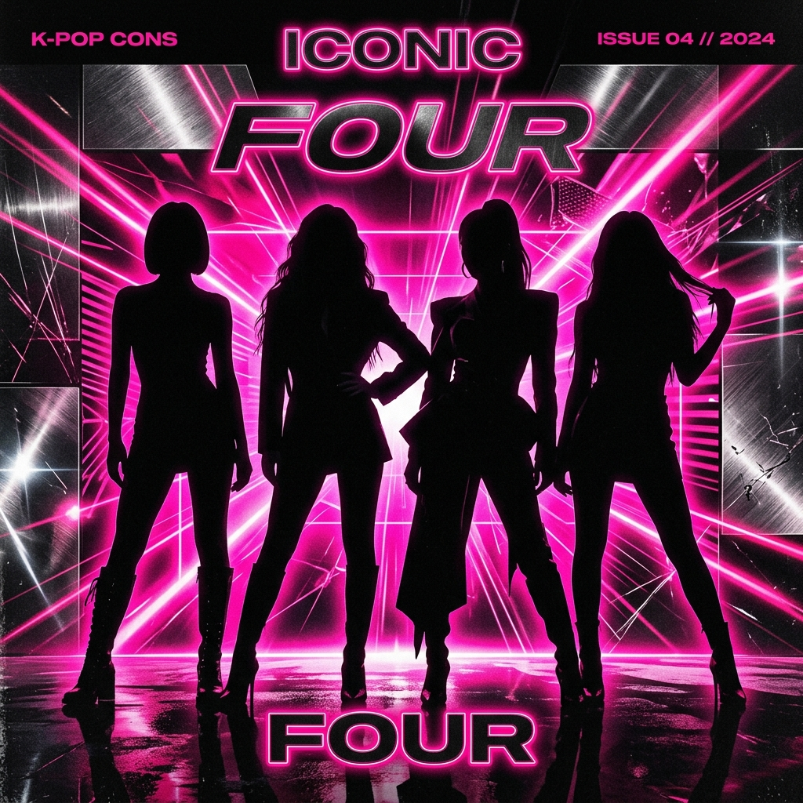
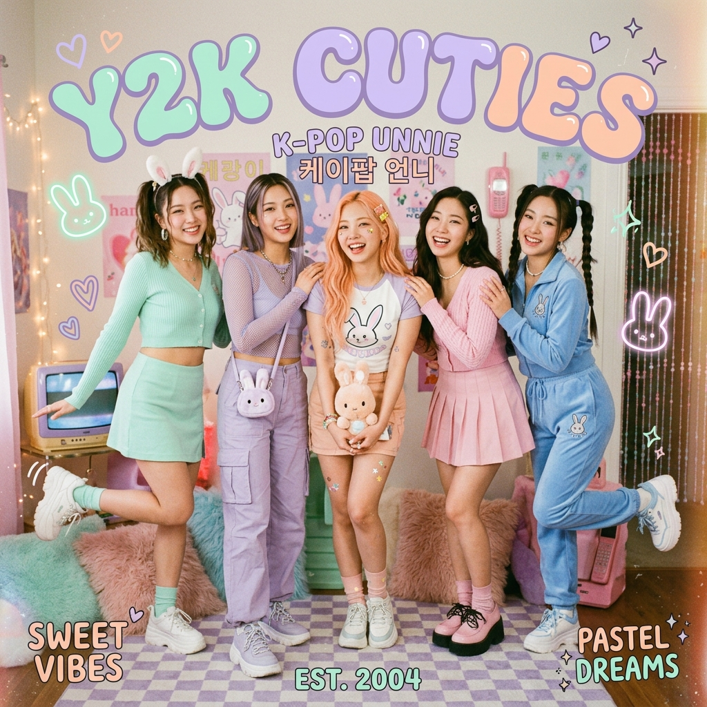

K-POP(Korean Pop)은 정교한 퍼포먼스, 최첨단 패션, 그리고 전 세계적인 팬덤 문화가 결합된 종합 예술입니다.
대한민국의 열정과 창의성이 빚어낸 이 흐름은 이제 전 세계 대중문화의 중심이 되었습니다.
동양적 멜로디와 서구적 사운드의 조화
화려한 퍼포먼스와 압도적 연출
서태지와 아이들을 기점으로 시작된 현대적 아이돌의 탄생. H.O.T., S.E.S. 등이 활약하며 팬덤 문화의 기틀을 마련했습니다.
빅뱅, 소녀시대, 동방신기 등이 아시아 전역으로 진출하며 본격적인 한류 열풍을 일으킨 시기입니다.
BTS, BLACKPINK, EXO 등이 SNS와 유튜브를 통해 전 세계 음악 시장의 주류로 우뚝 섰습니다.
NewJeans, Stray Kids, aespa 등이 장르의 경계를 허물며 메타버스와 다양한 컨셉으로 혁신을 이어가고 있습니다.
연습생들은 데뷔 전까지 수년간 보컬, 댄스, 외국어 등 체계적인 교육을 받으며 실력을 갈고닦습니다.
단순한 가수를 넘어 퍼포먼스, 연기, 인성 교육까지 포함된 전방위적인 역량 강화를 목표로 합니다.
"K-POP의 성공 뒤에는 정교하게 설계된 인재 육성 시스템이 있습니다. 이는 단순한 연습을 넘어 아티스트의 철학과 태도를 형성하는 과정입니다."
 Standard of Excellence
Standard of Excellence
전 세계를 사로잡은 대한민국 대표 아티스트.
21세기 팝 아이콘. 전 세계 차트를 휩쓸며 역사를 쓰는 글로벌 그룹.

걸그룹의 정점. 독보적인 음악과 패션으로 세계를 매료시킨 아이콘.

새로운 물결. 신선한 매력으로 전 세대를 사로잡은 글로벌 샛별.
K-POP은 이제 경제, 문화, 사회 전반에 걸쳐 막강한 영향력을 발휘하고 있습니다. 대한민국을 넘어 전 인류의 문화적 자산이 되었습니다.
Annual Streams
Exporting Countries